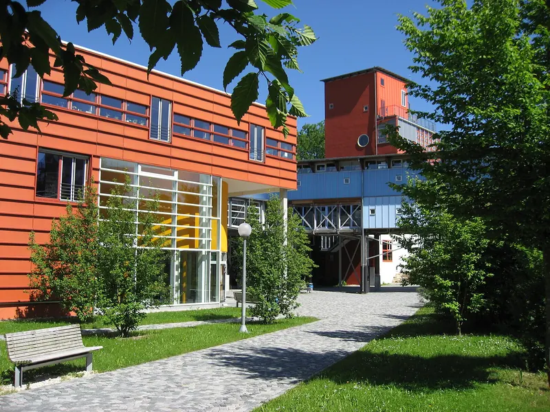
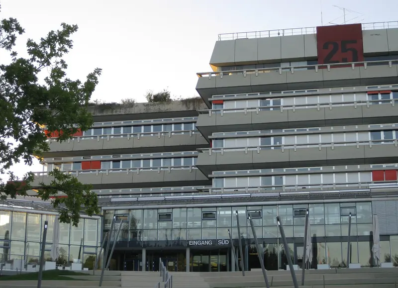
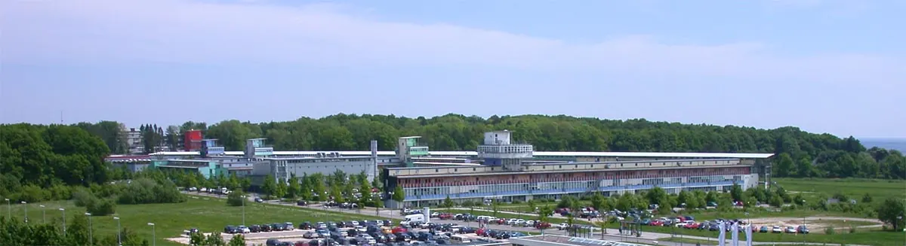

Hausmeister & Objektbetreuung
Regelmäßige Rundgänge, Kleinreparaturen, Schlüssel- und Zugangsorganisation. Wir sehen Probleme, bevor Ihre Mieter sie melden.
Facility Management · Science Park Ulm
APM Ulm betreut Büro-, Labor- und Forschungsgebäude am Oberen Eselsberg – Haustechnik, Brandschutz, Außenanlagen und alles dazwischen. Ein Ansprechpartner, der vor Ort ist.

Leistungen
Regelmäßige Rundgänge, Kleinreparaturen, Schlüssel- und Zugangsorganisation. Wir sehen Probleme, bevor Ihre Mieter sie melden.
Heizung, Lüftung, Sanitär, Elektro: Wir koordinieren Wartungen und halten Prüffristen im Blick – von der Aufzugsprüfung bis zur DGUV V3.
Rettungswege frei, Anlagen geprüft, Unterlagen aktuell. Wir organisieren die Prüfungen, dokumentieren lückenlos und begleiten Begehungen.
Grünpflege, Wege, Parkflächen sowie Räum- und Streudienst – damit am Oberen Eselsberg auch im Januar jeder sicher ankommt.
Wir steuern Reinigung, Entsorgung und Fachfirmen, prüfen die Leistung und sind die eine Nummer für alles.
Etwas fällt aus? Wir nehmen die Meldung auf, beheben selbst oder holen den richtigen Fachbetrieb – und melden zurück, wenn es erledigt ist.
Unser Standort
Am Oberen Eselsberg ist seit den 1980er-Jahren die Wissenschaftsstadt gewachsen: Universität, Kliniken, Forschungsinstitute und die Entwicklungszentren namhafter Unternehmen – verteilt auf die Ausbaustufen Science Park I bis III.
Labore, Serverräume, viel Publikumsverkehr: Gebäude hier brauchen einen Betrieb, der zuverlässig funktioniert. Genau dafür sind wir da.
* Angabe der IHK Ulm, Stand 2014. Die Fotos zeigen den Standort und sind keine Referenzobjekte.






Science Park III
40 Hektar,
die gerade wachsen.
Die dritte Ausbaustufe bringt neue Labor- und Bürogebäude an den Eselsberg. Neue Gebäude, neue Technik – wir sind bereit.
So starten wir
Wir sehen uns Ihr Objekt gemeinsam an: Technik, Flächen, Prüfpflichten, offene Punkte.
Anlagen, Fristen und Ansprechpartner übersichtlich an einem Ort dokumentiert.
Feste Rundgänge, schnelle Reaktion bei Störungen, Fachfirmen im Griff.
Regelmäßig auf einen Blick: was erledigt ist, was geplant ist, was ansteht.
Wir kennen Ihr Gebäude, weil wir regelmäßig drin sind – nicht aus dem Ticketsystem.
Prüfungen, Wartungen, Mängel: nachvollziehbar festgehalten, wenn Versicherung oder Behörde fragt.
Eine Nummer für Technik, Brandschutz und Außenanlagen. Wir kümmern uns um den Rest.
Kontakt
Kurz anrufen oder schreiben – wir melden uns, schauen uns das Gebäude an und machen Ihnen ein klares Angebot.